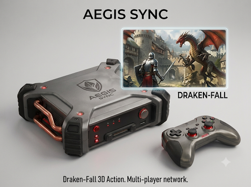

Caso Curioso #1: la consola que se vendió con un error dentro

Uno de los episodios más recordados por los coleccionistas ocurrió cuando un lote completo de consolas salió a la venta con una versión de firmware que nunca debió abandonar el laboratorio. El error no rompía la consola: cambiaba el orden en que el sistema leía la memoria interna, lo que provocaba que algunos títulos cargaran más rápido de lo previsto.
Del error al mito
Lejos de devolver las unidades, los primeros compradores empezaron a comparar tiempos de carga y notaron la diferencia. En cuestión de semanas esas unidades pasaron a venderse por sobre el precio de lista en el mercado de segunda mano, simplemente por conservar la versión defectuosa. El fabricante terminó publicando una actualización que corregía el comportamiento, y con eso convirtió a las consolas sin actualizar en piezas de colección.
Qué aprendimos
La historia se repite cada cierto tiempo y deja una lección práctica para cualquiera que compre hardware usado: la versión de firmware importa tanto como el estado físico del equipo. En ConFun revisamos y documentamos la versión de sistema de cada consola antes de publicarla, justamente para que sepas exactamente qué estás comprando.
- Revisa siempre la versión de sistema antes de comprar.
- Una actualización puede quitar funciones, no solo agregarlas.
- El valor de coleccionista no siempre coincide con el mejor rendimiento.